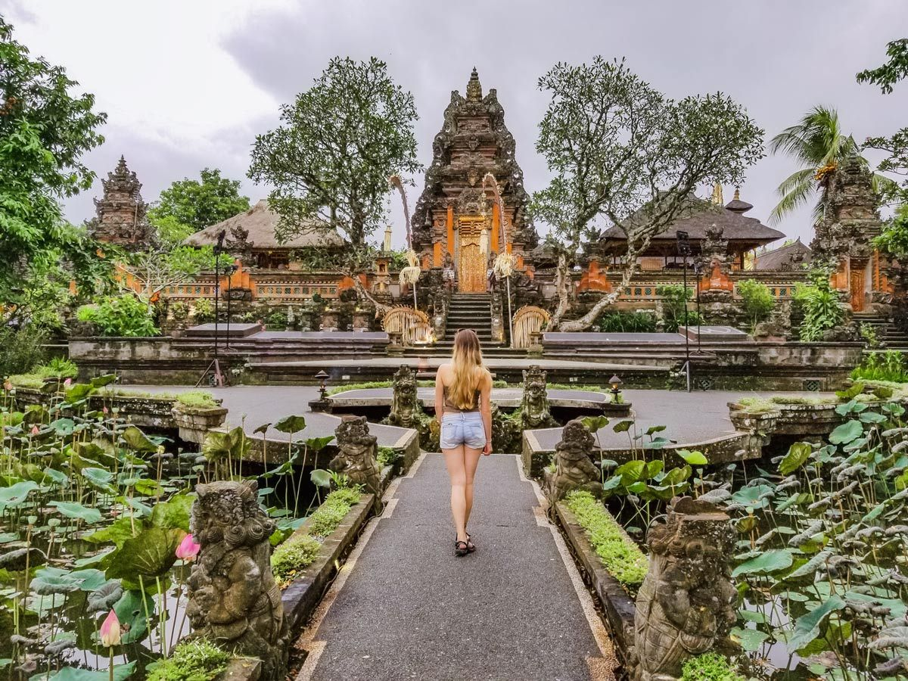

Best Places for Honeymoon in Indonesia
-

Ubud, Bali
Bali is one of the best island in Indonesia. One of the famous city in Bali is Ubud. It is a paradise for couples from all over the world who are looking for a romantic place. The natural atmosphere which is green, calm and beautiful, as well as the sound of the gurgling of the river water and the view of the tropical forests and vast stretches of rice fields, make Ubud the perfect place for honeymooners. There are so many resorts and hotels that have peaceful and relaxed atmosphere scattered around Ubud.
-

Gili Trawangan, Lombok
Gili Trawangan in Lombok represents a very beautiful island with deserted white sand and clear blue water beaches in Indonesia. This is one of Indonesia top honeymoon destination. There are three part of Gili in Lombok, but the most popular one is Gili Trawangan. Beside the beach, Gili Trawangan also offers stunning underwater scenery where you can see natural and colorful coral reefs, some fish species and of course the clear blue water. There are other things that are the hallmarks of Gili Trawangan Lombok when compared to other islands in Indonesia, which are pollution-free. This is because motorized vehicles are strictly forbidden to use here.
-
nihiwatu resort, sumba
If you are couple who love adventure, then Sumba is the right location to explore. Start from observing natural paintings on Bukit Warinding to watching the twilight romanticism on Walakiri Beach. The vast Sumba region requires you to make detailed travel plans, so that you and your partner will get the best experience. If you don’t want to worry about the itinerary planning, you can go directly to Nihi Sumba Resort and get some tour packages in the West Sumba area. Nihi Sumba Resort itself is the best hotel according to travel + leisure magazine for two consecutive years. Here, you can do a variety of exciting and unique activities, ranging from fishing, surfing, safari spas or visiting traditional villages in West Sumba.
-

pulo cinta eco resort, gorontalo
A new romantic honeymoon spot that become a trend in 2019 is the heart shaped island, Pulo Cinta located in Patoameme, Boalemo, Gorontalo. Pulo Cinta is one of the romantic honeymoon places in Indonesia which is no less romantic and exotic than the Maldives. Maldives Van Gorontalo is the nickname of Pulo Cinta. Named Pulo Cinta because when viewed from the air, there is a collection of sand in the beach area shaped like a sign of love or a sign of the heart. The environment is very calm and far from the noise of the city, that makes Pulo Cinta a suitable place for honeymoon destinations. Here, you and your partner are guaranteed to be never satisfied playing on beautiful beach. Other activities you can do are scuba diving and snorkeling